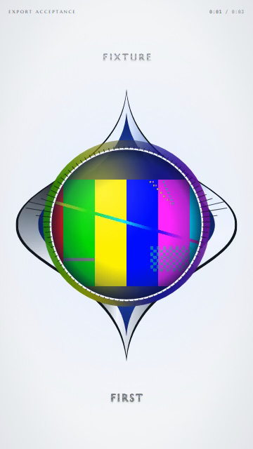
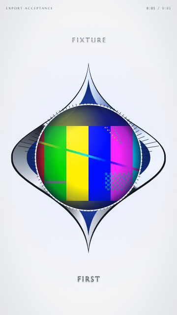
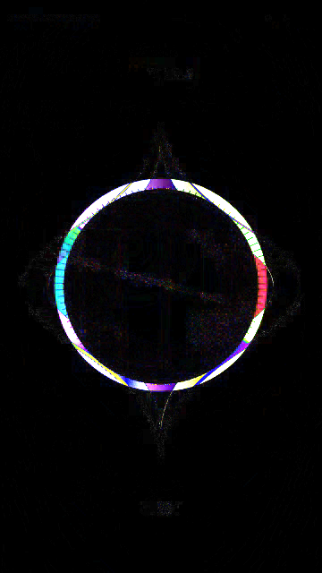

Quicksilver portrait, frame 45. The original worker mismatch is small in this sample. The candidate visibly removes the colored rim outside the orb. These are decoded export frames at native resolution.



The amplified difference views are diagnostics, not actual output. A still does not establish visibility during playback or cross-platform qualification.